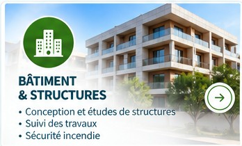
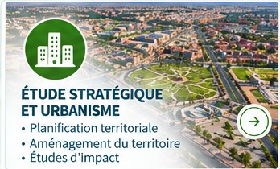
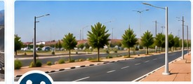

Bâtiment & structures
Conception, structures, lots techniques, sécurité incendie et suivi des travaux.
Bâtir aujourd’hui un avenir durable
Une expertise pluridisciplinaire au service de vos projets dans les secteurs du génie civil et de l’aménagement du territoire.
Nos domaines d’expertise
ROCSOL INGENIERIE intervient sur les études, la conception, l’assistance technique et le suivi des travaux dans plusieurs domaines complémentaires.

Conception, structures, lots techniques, sécurité incendie et suivi des travaux.

Réseaux, ressources en eau, assainissement et stations de traitement.

Études d’avant-projet, exécution, métrés, maîtrise d’œuvre et coordination.

Réseaux électriques, télécommunications, éclairage public et suivi.

Planification territoriale, aménagement, lotissements et études générales.

Accompagnement, études d’impact, optimisation et suivi réglementaire.

Études, accompagnement administratif et suivi des dossiers miniers.

Voirie, réseaux divers, viabilisation et aménagement des lotissements.